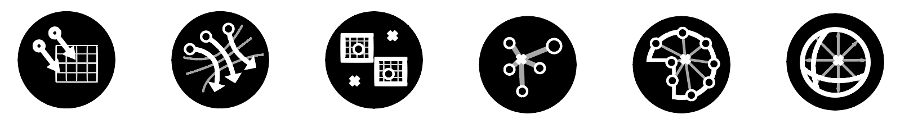
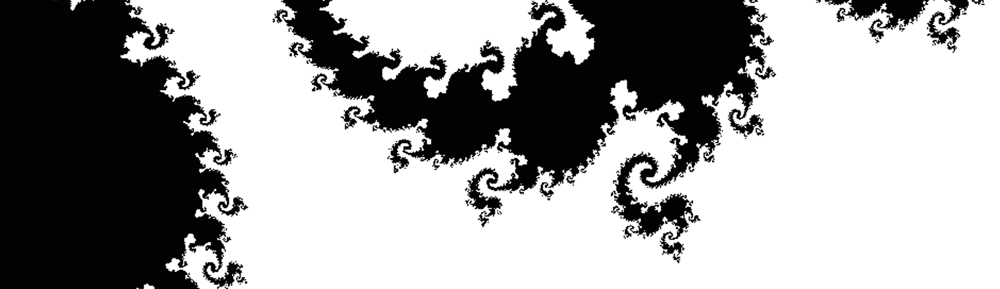
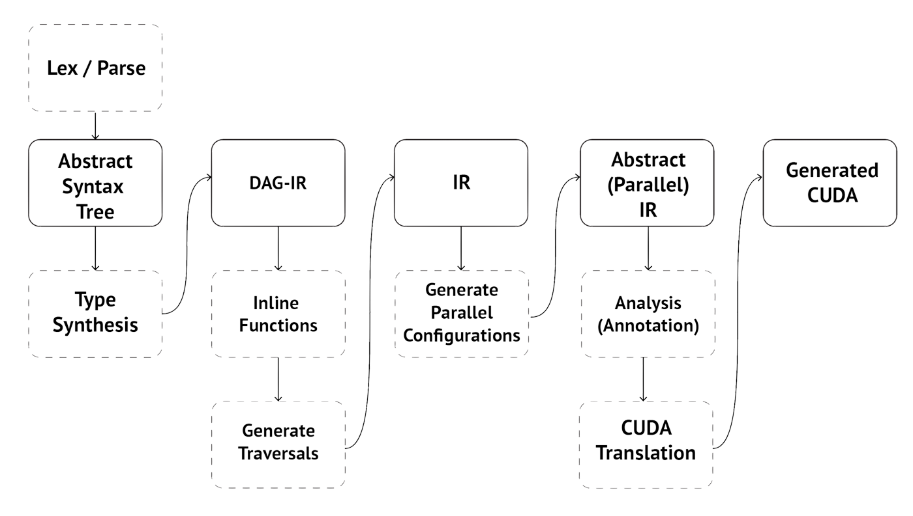
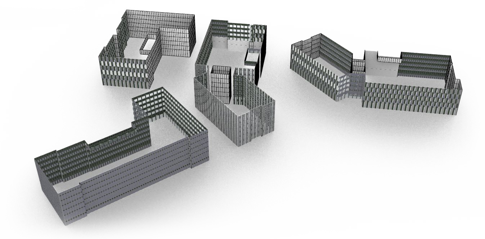
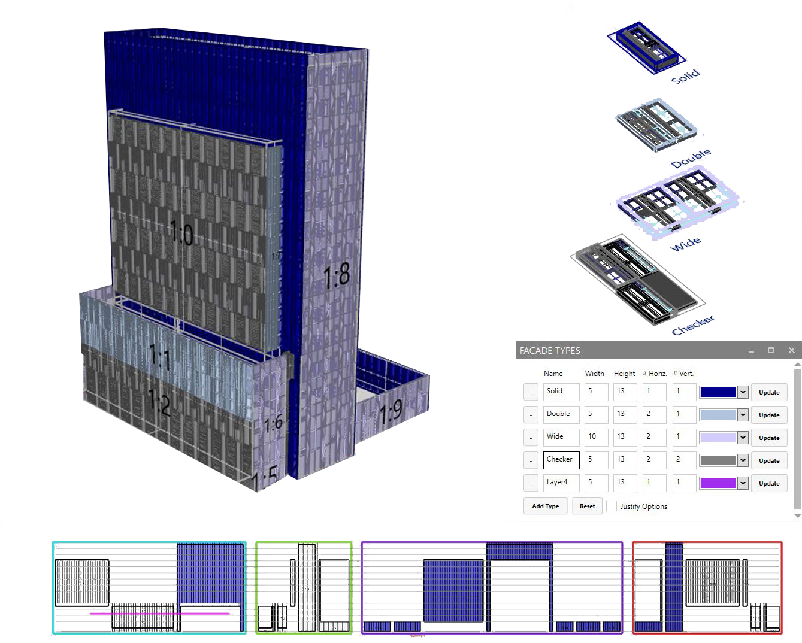
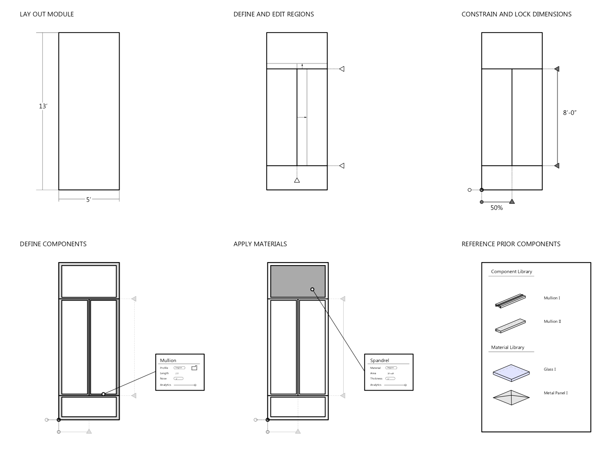
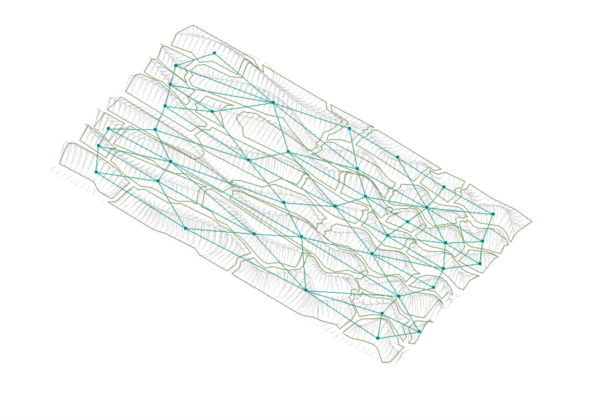
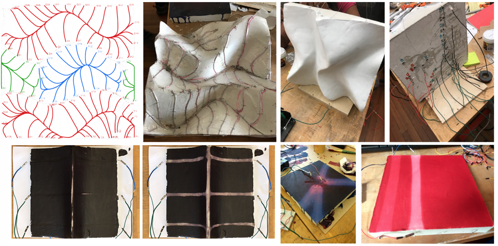
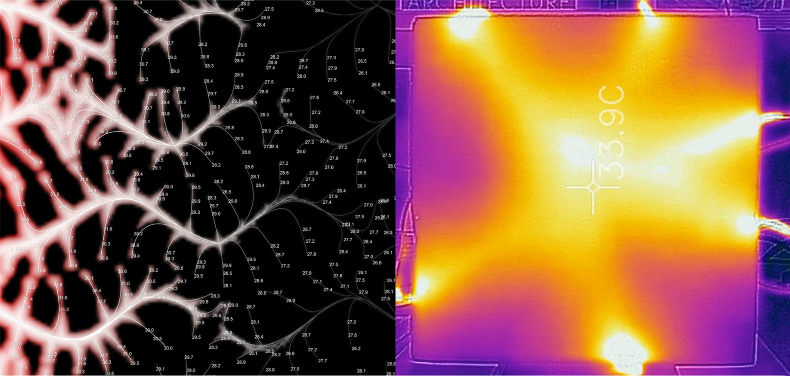

I'm a PhD student in Computer Science at the University of Washington advised by Ras Bodik and Adriana Schulz.
I am working on problems in computational geometry and shape manipulation using program synthesis and related tools. Right now, that includes representing 3D CAD models as programs and developing synthesis-based tools for bidirectional editing, constraint exploration, and design optimization. I am always looking for new applications for this work, particularly in the domain of improving architecture, design, and the built environment.
My past work focuses on applications of parallel computing and constraint-based geometric modeling tools, as well as research in combining computation and fabrication to make more responsive environments. I completed my undergraduate degree as a dual major in both Architecture and Computer Science, and I'm still working to intersect them — if you're interested in combining these fields, please do reach out!
Impala
Parallel, high performance component library for Grasshopper3D.
Grasshopper3D is a visual programming language for creating parametric models embedded in the CAD platform Rhino3D. It works as a directed graph of components, each performing an operation, that send trees of data along edges to trigger recomputation.
Impala dramatically improves the performance of Grasshopper on models that handle large amounts of data. At its core, it provides a reimplementation of standard components to run in parallel as a drop-in replacement to the Grasshopper standard library. Impala is excellent for processing point clouds, landscape data, and physical simulations.
Impala combines this strategy with a few key insights to maximize the available performance benefit:
- Minimize allocation overhead. Impala re-implements the basic data tree structure. This allows space to be preallocated, trees to be filled in parallel, and a compact encoding of tree paths.
- Restrict type-casts. Impala assumes a homogenous type of data in a tree, as is nearly always the case in practice. This allows type conversions to happen much more quickly for large data trees.
- Algorithmic optimization. Impala replaces some quadratic implementations in the standard library with custom strategies that have improved parallel complexity.
DAG
Data-parallel programming language compiled for GPU.

As part of CMU's 15-418, Parallel Computer Architecture and Programming, Nick Roberts and I designed an implemented a programming language to easily prototype different strategies for parallelisation on the GPU.
Our basic concept is to represent each program point as an expression node in directed acyclic graph. This directly expresses which nodes contain dependencies. We derive a traversal of this DAG representing a particular parallel execution, and optimize our choices based on statically gathered heuristics such as minimizing memory transfer.
We directly model regular parallelism inherent in the program as a set of first-class primitive parallel-expressions, which include
for, zip_with, filter_with,reduce, scan, range, and transpose. For a detailed description of the semantics of these primitives, the interested reader can refer to the full report.Together these allow the user to precisely convey their intent for what should be parallelized. Our compiler then analyzes nested and consecutive parallel-fors and lowers them to CUDA kernel launches, performing loop fusion and merging nested parallelism in attempting to minimize the number of launches needed.

We demonstrate the efficacy of our system through concise and performant programs performing large matrix multiplications, fractal renderings (seen above), and previous 15-418 course assignments — all problems that are embarassingly parallel, but somewhat painful to implement. We theorize that this approach would work reasonably well with other parallel GPU backends.
Modeling Tools
Constraint-Based Modeling: Panel Designer & Façade Painter
Under the supervision of Nate Holland

In design computation team at NBBJ, we worked on solutions to aid the design and modeling process of building facades, which are often complex and unwieldy to manipulate and iterate on in existing building information modeling pipelines. Our solution allowed users to model a module or a set of pattern modules responsively with constraints in Rhino3D and pattern them adaptively and parameterically using Grasshopper3D. After the initial design is set, further work exports the geometry and parameters to a higher-detail format for processing in Autodesk Revit.

In this work, the designer is able to quickly insert and remove constraints, and constraints are responsive and flexible to user editing. Our custom implementation allows users to model flexibly and quickly, and immediately see the impact of their changes at a building level in an interactive tool.

In practice, this tool was able to save tens of hours on each project in the early design phase for teams iterating quickly on facade curtain wall design compared to modeling traditionally or within Revit directly. This work was presented and demonstrated in an industry talk at Autodesk University 2018.
Sentient Concrete
Environmentally-responsive surface geometry.
Under the supervision of Dana Cupkova and Daragh Byrne.
This design work focuses on remixing thermochromic elements as an environmental design element, and sits within a larger body of work on using computational design to create interactive architectural elements. We prototype architectural concrete panels that are responsive to human presence, activating in the presence of observers by changing color through an embedded electric system.

The project makes extensive use of physical simulation to understand the interaction of temperature with the surface material and geometry, in order to accurately predict and iterate on the design of dynamic thermal effects — both surface geometry and wiring density have a profound effect on heat dissipation, and, correspondingly, the length of the time that the panel changes color.

We fabricated several prototypes using concrete with an outer plaster layer, embedding our wiring at a precise and consistent depth. For larger panels, we use multiple wiring regions for fine-tuned control over thermally actuating changes.
Cupkova, D. and Byrne, D., Cascaval, D. 2018. SENTIENT CONCRETE: Developing Embedded Thermal and Thermochromic Interactions for Architecture and Built Environment. In Proceedings of the 23rd International Conference of the Association for Computer-Aided Architectural Design Research in Asia (CAADRIA) 2018, Hong Kong.
Join
Software Engineer, 2019-2020
Join is a San Francisco-based software startup providing intelligent collaboration tools for the construction industry. Construction is an incredibly complex industry with many moving parts, and construction professionals are known for their dedication to the field and for the high demands they place on their tools of choice.
While at Join, I worked as part of a small, fast-moving product team shipping production-quality code with an eye for making a positive impact in the lives of our users. I had the chance to work on every part of the stack —
- Optimizing Postgres queries to improve whole-application performance
- Extending and tuning our Golang backend to support new product features
- Rebuilding and automating our testing infrastructure to support tests that are faster, easier to write, and more reliable
- Designing and iterating on highly-interactive user-facing web components for cost manipulation and tracking
NBBJ
Design Computation Intern, Summer 2018
NBBJ is a world-class architecture firm based in Seattle, innovating in sustainability and design technology. I interned on the Design Computation team, tasked with understanding architectural design workflows and finding ways to make design software more efficient, scalable, and user-friendly.
As part of the team, I worked on
- Automating facade-modeling tools to handle patterns and allow designers to quickly iterate and optimize complex forms.
- Researching how plugins to surface-modeling tools like Rhino can allow for a hybrid of direct and constraint-based modeling strategies.
- Developing tools and strategies to aid interoperability between software used both within the firm and externally.
Carnegie Mellon
Teaching & Research Assistant, 2016-2019
At Carnegie Mellon I did research under Dana Cupkova, Josh Bard, and Daragh Byrne. I brought a unique knowledge of computation to the table and wrote some software that is still used in the labs today. This included work in:
- Robotic manufacturing of architectural-scale concrete panels to allow a wider variety of forms and faster production without using molds
- Design optimization for concrete panels to have precise thermal properties derived from their surface geometry
- Thermally coloring panels using embedded, proximity-controlled wiring to create a spidery, concrete mood-ring...
Throughout my undergraduate experience I also was lucky to discover and nurture a love of teaching. I served as a teaching assistant for classes whenever I could, including:
- Compiler Design (Fall 2019), a graduate/undergraduate compilers course focusing on modern compiler optimizations with Prof. Seth Goldstein
- Principles of Software Construction (Fall 2018), an undergraduate object-oriented software design and analysis course with Profs. Charlie Garrod and Josh Bloch.
- Computational Techniques for the Built Environment (Spring 2018), a design-based seminar bringing interdisciplinary students together to do computationally-focused design research under Prof. Dana Cupkova
- Introduction to Digital Media (Fall 2016 to Spring 2018) throughout its many forms, introducing architecture students to 3D-modeling, rendering, animation, and parametric design, under Prof. Eddy Man Kim.